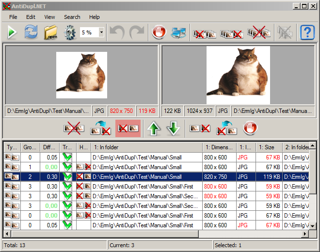

Table of Results
Table of Results is placed in the right side of main window for table of vertical pairs view mode of results:

or in the bottom side of main window for table of horizontal pairs view mode of results:
Switching the view mode of results is carried out using the item View - View mode of results of Main Menu. The Table of Results is designed for displaying and processing of results of the program. You can navigate between the results with using the mouse and standard keyboard (Up, Down, Page Up, Page Down, Home and End) and its combinations (Control+A). This picture (s) of the current results will be displayed in the Preview Panel, and the number of the current results, the number of selected results and their total number will be displayed in the Status Bar.
Table of results in the table of vertical and the horizontal pairs includes the following columns:
Type - this column displayed type result This can be:
or
- Duplicate pair of pictures. For vertical orientation of results this type is displayed in the form of a double line.
- Defect picture.
Group - searched pairs of duplicate images can be combined into groups with similar results. This column displays the number of such groups.
Size of group - This column displays the size of group.
Difference - it displays the percentage mean-square difference of content of pictures of duplicate pair. If the images are fully identical, the difference is shown in green.
Defect Type - it shows the type of defect images. The program can find defects in the following types:
- Unknown Defect. This means that the program failed to correctly open the file.
- There is no marker of the end of JPEG file. How understandable from the names given type defect arises, if JPEG file not finish till end. This may happen, for example, when downloading from the internet with poor quality communication.
- Blockiness in file. The effect of a blockiness (compression artifacts) which are shown in case of the strong compression ratio in the JPEG format is found in the picture.
- Blurring image. High blur of the image is found in the picture.
Transformation - it is a type of transformation that you need to make over the top/left image that it would coincide with the bottom/rifght image. Information of this column is relevant when searching for mirroring and rotate the image. There are eight types of transformation:
- Original. A transformation is not required for the coincidence.
- Rotated 90°. Here and below all the turns are measured in a direction counter-clockwise.
- Rotated 180°.
- Rotated 270°.
- Horizontal mirror.
- Horizontal mirror and rotated 90°.
- Horizontal mirror and rotated 180° (Vertical mirror).
- Horizontal mirror and rotated 270°.
Recommendation - it displays the action that the computer recommends the user to perform. The recommendation is given when possible to unambiguously determine which image of a pair is better or at least no worse. In the case of completely identical images, there is some uncertainty with the choice of pictures to delete. To avoid this uncertainty you can define Delete Paths in the Paths Window. Then the computer ceteris paribus would recommend removing the picture of those paths. If, however, the image in Delete Paths will be with the best quality, they will be encouraged to move (rename) it from there. The recommendation may has next values:
- Delete picture.
or
- Delete first picture.
or
- Delete second picture.
or
- Replace second picture by the first picture.
or
- Replace first picture by the second picture.
Next columns are enabled only for table of vertical pairs (the cells of the columns will be doubled in the case of duplicate pair)
Name - it contains the file name of the picture.
In folder - it displays the directory in which the image is located.
Dimmensions - it contains picture size (width and height).
Image Type - it displays image file format (BMP, GIF, JPEG, PNG, TIFF, EMF, WMF, EXIF, ICON, JP2 or PSD).
Blockiness - shows the picture blockiness (appearance of characteristic small squares of 8x8 in size) expressed as a percentage.
Bluring - shows the radius of blur of the picture expressed in pixels.
Size - it contains size of the picture file.
Date modified - it contains date of last change the image file.
And these columns are enabled only for table of horizontal pairs:
1: Name - it contains the file name of the first picture.
1: In folder - it displays the directory in which the first image is located.
1: Dimmensions - it contains first picture size (width and height).
1: Image Type - it displays first image file format (BMP, GIF, JPEG, PNG, TIFF, EMF, WMF, EXIF, ICON, JP2 or PSD).
1: Blockiness - shows the picture blockiness (appearance of characteristic small squares of 8x8 in size) expressed as a percentage.
1: Bluring - shows the radius of blur of the picture expressed in pixels.
1: Size - it contains size of the first picture file.
1: Date modified - it contains date of last change the first image file.
2: Name - it contains the file name of the second picture.
2: In folder - it displays the directory in which the second image is located.
2: Dimmensions - it contains second picture size (width and height).
2: Image Type - it displays the second image file format (BMP, GIF, JPEG, PNG, TIFF, EMF, WMF, EXIF, ICON, JP2 or PSD).
2: Blockiness - shows the picture blockiness (appearance of characteristic small squares of 8x8 in size) expressed as a percentage.
2: Bluring - shows the radius of blur of the picture expressed in pixels.
2: Size - it contains size of the second picture file.
2: Date modified - it contains date of last change the second image file.
Note that if a duplicate images have of different type, then this information is highlighted in red. Also smaller image dimensions and smaller file size are highlighted in red.
The visibility of table columns you can customize in the item View - Select Columns of the Main Menu. Their width and order can be easily adjusted by using the mouse. If you click on the column header, then the table will be sorted by content of the column. When you click here again, sorting will be performed in the opposite direction. Note that the column on which sorting was carried out and its direction are stored, and re-search results will be sorted the same way.
If the user clicks the right mouse button on the table of results, it will cause a Context Menu where you can process the selected results. Note that the functionality of the context menu are duplicated on the Tool Bar. As you press Control+C, the selected row in the result will be copied to the clipboard.